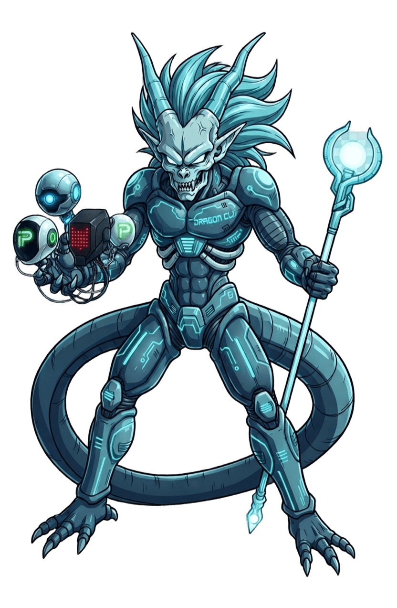

Dragon CLI
Chat with local GGUF LLMs on your own CPU — with MCP tools, saved conversations, and an OpenAI-compatible server.


What it does
100% local, CPU-only chat
Downloads GGUF models from Hugging Face and runs them with llama.cpp — no GPU, no cloud API key.
MCP tool-calling
Connect any MCP (Model Context Protocol) stdio server and the model can call its tools mid-conversation.
Persistent conversations
Every message autosaves to SQLite. List, resume, rename, delete, search, and export past conversations.
OpenAI-compatible server
dragon-cli --serve exposes the model over HTTP, with Swagger UI and ReDoc auto-generated by FastAPI.
Install
pip install -e .
dragon-cli-install-llm # detects your OS, installs a prebuilt llama-cpp-python wheelSee the README for the full install and troubleshooting guide (Windows/Linux/macOS).
Use it
dragon-cli # model menu + interactive chat
dragon-cli --resume 3 # resume a saved conversation
dragon-cli --serve --port 8000 # serve the model over HTTP insteadIn-chat commands
| Command | Description |
|---|---|
/help | show available commands |
/new, /list, /resume <id> | manage conversations |
/rename, /delete, /search, /export | more conversation management |
/tools, /mcp | inspect connected MCP servers/tools |
/exit | quit |
New: Intelligent Model Orchestrator
Dragon CLI now includes advanced hardware detection and automatic model recommendation features:
🔍 Hardware Detection
Automatically detects CPU, RAM, GPU (NVIDIA/AMD/Apple Silicon), and disk space to build an execution profile.
🎯 Smart Recommendations
Recommends the best GGUF models for your hardware based on RAM, VRAM, and performance priorities (speed, quality, memory).
⚡ GPU Acceleration
The installer now auto-detects NVIDIA CUDA, AMD ROCm, or Apple Metal and installs optimized llama-cpp-python with GPU support.
🤖 Auto-Selection
Use --auto flag to automatically choose and run the best model for your system without manual selection.
New CLI Flags
dragon-cli --profile # show complete hardware profile
dragon-cli --recommend # display recommended models for your machine
dragon-cli --auto # automatically select and run the best model
dragon-cli --priority speed|quality|balanced|memory # set recommendation priorityAutomatic GPU Installation
dragon-cli-install-llm # now detects GPU and installs optimized version
# Supports: NVIDIA CUDA, AMD ROCm, Apple Metal, or CPU fallbackThe installer will automatically detect your GPU and compile llama-cpp-python with the appropriate acceleration backend for maximum performance.